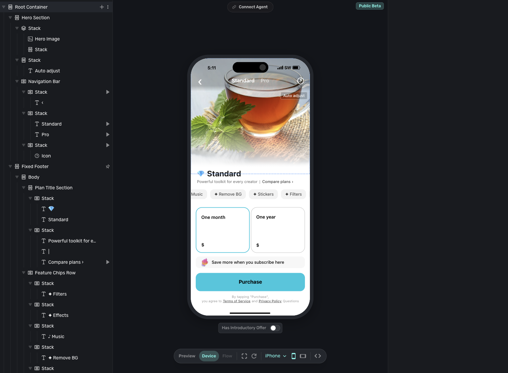

Superwall Alternatives for Indie iOS Apps
Short answer
The practical Superwall alternatives for an indie iOS app are RevenueCat when purchase and entitlement infrastructure is the priority, Adapty when paywall analytics and experimentation should live together, and Qonversion when a lower percentage meter matters. For a simple Apple-only app, native StoreKit 2 may fit better than another platform.
The first question is not “Which tool has paywalls?” They all do. Ask which job you need the tool to own, then compare the revenue meter attached to that job.

Which Superwall alternatives are worth comparing?
Use this shortlist for a solo or small-team iOS subscription app:
- Choose RevenueCat when purchases, entitlements, and cross-platform customer state should be the boring foundation.
- Choose Adapty when a growth workflow needs paywall building, onboarding, experiments, and subscription analytics in one place.
- Choose Qonversion when you want subscription infrastructure and paywalls together, but the percentage meter and tier boundaries deserve more weight.
- Choose native StoreKit 2 when the app is Apple-only, the product catalog is small, and remote paywall iteration is not yet a real job.
Superwall remains a valid choice. Its current platform includes entitlements, purchase APIs, receipt validation, webhooks, analytics, paywalls, and experiments. Its infrastructure layer is free at any scale, while the paywall product is metered on revenue attributed to Superwall-rendered paywalls. Switching because you think Superwall is only a presentation SDK would solve an outdated problem.
How do the options compare on price?
| Option | Free boundary | Paid meter | What the meter means |
|---|---|---|---|
| Superwall | Infrastructure free at any scale; paywalls free to $10,000 monthly paywall-attributed revenue | 1% of paywall-attributed revenue | The paid base is revenue converted through a Superwall-rendered paywall |
| RevenueCat | Free to $2,500 monthly tracked revenue | 1% of tracked revenue | The meter follows active subscriptions RevenueCat monitors |
| Adapty | Free under $5,000 monthly revenue | 1% of monthly revenue | Pro bundles infrastructure, analytics, paywalls, and experiments |
| Qonversion | Free to $10,000 monthly tracked revenue | Starter 0.6%; Growth 0.8% | Growth is the relevant tier for A/B experiments |
| StoreKit 2 | No third-party platform fee | Engineering and operations time | You own implementation, lifecycle handling, reporting, and server state |
Prices and plan boundaries were checked Aug 13, 2026, against official Superwall, RevenueCat, Adapty, and Qonversion pricing pages. Recheck them before committing spend.
The headline percentages hide the useful difference: the base matters as much as the rate. Superwall meters paywall-attributed revenue. RevenueCat and Adapty meter the subscription revenue they track. Qonversion advertises a lower rate, but its 0.6% Starter plan does not include A/B experiments; the 0.8% Growth plan is the closer replacement for Superwall's core experimentation job.
Why do generic Superwall alternatives lists get the decision wrong?
They compare labels that no longer separate the products.
“Subscription infrastructure” and “paywall SDK” used to describe different layers. The category has converged. Superwall, RevenueCat, Adapty, and Qonversion now overlap across purchases, entitlement state, remote paywalls, analytics, and experiments. A checklist that awards one point for every shared feature produces a tie and hides the tradeoff.
Use 3 harder questions instead:
- What is the source of truth? Decide which system tells the app whether a customer has access.
- What changes without an app release? Paywall layout, copy, targeting, offers, and experiment rules only matter if you will use that operating loop.
- Which revenue does the vendor meter? “1%” is incomplete until you know whether it applies to all tracked revenue or only paywall-attributed revenue.
[[verify: A user-provided capture shows the direct AlternativeTo URL /software/superwall/ returning “404 – Page not found” on Aug 14, 2026. Reproduce that direct-URL result in a second browser or independent network before publishing the narrow dated claim. Do not claim that AlternativeTo has no Superwall listing under any URL.]]
When is RevenueCat the right alternative?
Choose RevenueCat when purchase and entitlement truth is the first job.
RevenueCat models products, offerings, and entitlements, then exposes customer state through its SDKs. Its paywalls can be configured remotely, and its current pricing page also offers growth tools for teams that keep their own in-app purchase infrastructure. The reason to choose it is not that Superwall lacks infrastructure. It is that you want RevenueCat's purchase and customer model to sit at the center of the stack.
RevenueCat fits when:
- the app already uses RevenueCat and a migration would create more risk than value;
- iOS is only the first store, not the last;
- entitlements and customer state matter more than the paywall editor; or
- you want the subscription MVP stack to keep one established purchase ledger.
Do not switch for feature-count comfort. At $2,500 in monthly tracked revenue, RevenueCat's free boundary is lower than the other hosted options in this table. Model the meter against your expected revenue before deciding that familiarity is cheaper.
When is Adapty the right alternative?
Choose Adapty when paywall work belongs beside subscription analytics.
Adapty combines subscription infrastructure with a flow and paywall builder, targeting, A/B testing, and revenue analytics. Its documentation now directs new projects toward Flow Builder rather than the legacy Paywall Builder. That makes it a practical fit when one person or a small growth team will routinely connect onboarding, paywall variants, cohort behavior, and revenue outcomes.
Adapty fits when:
- onboarding and paywall experiments are one workflow;
- revenue, retention, churn, and lifetime-value analysis should sit beside the experiment;
- non-engineers need to change the monetization flow; or
- 1% of monthly revenue after the $5,000 boundary matches the value of the bundled workflow.
It is more platform than a quiet app with one product and one stable paywall needs. If you cannot name the next experiment, do not buy an experimentation workflow yet.
When is Qonversion the right alternative?
Choose Qonversion when the bundled platform fits and the meter is the deciding constraint.
The free tier includes subscription SDKs, basic analytics, customer management, a no-code paywall builder, and unlimited apps and seats up to $10,000 in monthly tracked revenue. Starter adds advanced analytics, integrations, and webhooks at 0.6% of revenue. Growth adds A/B experiments, raw data export, and additional integrations at 0.8%.
That tier line matters. If you need to replace Superwall's remote paywall presentation but not its experiments, Starter may be enough. If experiments are the reason you are leaving, compare Superwall against Growth, not the cheaper headline rate.
Qonversion fits when:
- you want a broad subscription bundle with a higher free boundary;
- 0.6% to 0.8% is material at the revenue level you expect;
- the features you need map cleanly to Starter or Growth; and
- you are willing to evaluate a less familiar workflow on its own merits rather than treating popularity as proof.
When should you use StoreKit 2 instead?
Use StoreKit 2 directly when the app is Apple-only, sells a small number of products, and does not need remote paywall experiments.
StoreKit 2 provides Swift APIs for products, transactions, entitlement status, subscription state, and SwiftUI merchandising views. The App Store Server API can return transaction history and current subscription status from your server. That is enough to build a reliable purchase path without paying a third-party platform percentage.
The tradeoff is ownership. You design the data model, handle transaction updates and restores, react to refunds and billing states, build reporting, and operate any server-side subscription logic. Native is the smallest vendor footprint, not automatically the smallest engineering responsibility.
StoreKit-only fits when:
- the app ships only on Apple platforms;
- one or two products unlock one entitlement;
- the paywall changes with app releases, not every week;
- cross-platform identity is not required; and
- you are comfortable maintaining the subscription lifecycle.
Add a hosted platform when the missing job becomes concrete: shared entitlements across stores, remote paywall changes, experiment assignment, revenue analytics, customer support tooling, or reliable webhooks you do not want to operate.
When should you run Superwall and RevenueCat together?
Run both when RevenueCat already owns purchase truth and Superwall has a distinct job: paywall presentation, targeting, and experimentation.
This is a supported integration, not an improvised stack. RevenueCat can send subscription and revenue events to Superwall, while Superwall's purchase controller can route purchase and restore logic through RevenueCat. The important rule is still simple: one system owns entitlement truth, and both SDKs use the same customer identifier.
The dual stack fits when:
- RevenueCat is already proven in production;
- the team wants Superwall's paywall workflow without migrating subscriber state;
- the added SDK, dashboard, identity mapping, and event reconciliation have a named owner; and
- paywall traffic is high enough for experiments to produce useful evidence.
Do not start with two platforms just because the integration exists. Superwall can now run as the subscription backend on its own, and RevenueCat has its own paywall and growth tools. A greenfield app should need a specific capability before it accepts two sources of configuration.
For a deeper version of this exact boundary, read Superwall vs RevenueCat. For the broader category, compare the current iOS paywall tools.
Which alternative should an indie iOS developer choose?
- RevenueCat: choose purchase and entitlement infrastructure first.
- Adapty: choose an analytics-led paywall and onboarding workflow.
- Qonversion: choose the bundled platform when its tier and percentage meter fit better.
- StoreKit 2: choose no third-party platform when the app is simple enough to own the lifecycle.
- Superwall plus RevenueCat: keep both only when each has one explicit job.
The quiet answer is often to keep Superwall. Its product boundary changed: it can now own the subscription backend as well as the paywall. Switch only when another option gives one decision area a clearer owner, a better operating workflow, or a meter that fits how the app earns.
Frequently asked questions
Can Superwall replace RevenueCat?
Yes. Superwall's current subscription infrastructure includes entitlements, purchase APIs, receipt validation, webhooks, analytics, and SQL access, and that layer is advertised as free at any scale. RevenueCat remains a valid choice when you prefer its purchase and customer model or already rely on it in production.
Is RevenueCat a direct Superwall competitor?
Increasingly, yes. Both now offer subscription infrastructure, remote paywalls, and growth tooling. They still lead with different operating models: RevenueCat centers purchase and entitlement infrastructure, while Superwall centers paywall presentation and experimentation.
Which alternative has the lowest percentage fee?
Qonversion advertises 0.6% on Starter and 0.8% on Growth after its free boundary, compared with 1% meters on RevenueCat, Adapty, and Superwall. The bases and included features differ. Superwall charges on paywall-attributed revenue, and Qonversion reserves A/B experiments for Growth, so the lowest percentage is not automatically the lowest bill for your use case.
Is StoreKit 2 free?
StoreKit 2 adds no third-party subscription-platform fee. Apple still owns App Store commerce, and you still pay with engineering and operating time for purchase state, lifecycle handling, reporting, and any server component you build.
Source checks
Product and pricing claims were checked against official sources on Aug 13, 2026: Superwall pricing, Superwall docs, RevenueCat pricing, RevenueCat's Superwall integration, Adapty pricing, Qonversion pricing, StoreKit 2, and the App Store Server API.
No hands-on testing claim is made. Prices, plan boundaries, and capabilities can change. A user-provided capture shows the direct AlternativeTo Superwall URL returning 404 on Aug 14, 2026, but that dated statement remains excluded until a second environment reproduces it. The capture does not prove site-wide absence.
See the subscription-consumer stack to place the paywall, purchase ledger, analytics, and backend into one lean iOS setup.
Last checked: Aug 13, 2026.